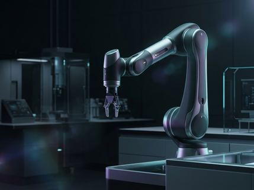

Sparse Attention Architectures Cut Million-Token Context Latency by 68%
Researchers introduce hierarchical block-sparse routing that dynamically prunes KV-cache memory overhead during long-context autoregressive decoding.
Featured Research LLMs & Agents
Researchers introduce hierarchical block-sparse routing that dynamically prunes KV-cache memory overhead during long-context autoregressive decoding on H200 and B200 GPU clusters.
Showing verified preprints, hardware analyses, and engineering reports.
Researchers introduce hierarchical block-sparse routing that dynamically prunes KV-cache memory overhead during long-context autoregressive decoding.

End-to-end diffusion policies trained on synthetic physics simulations transfer zero-shot to bimanual industrial manipulators at 120Hz control rates.
Co-packaged silicon photonics deliver 14.4 TB/s chip-to-chip bandwidth at 1.2 picojoules per bit, eliminating copper SERDES bottlenecks.